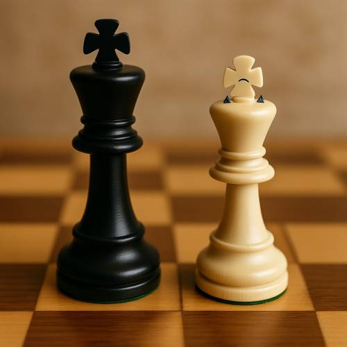
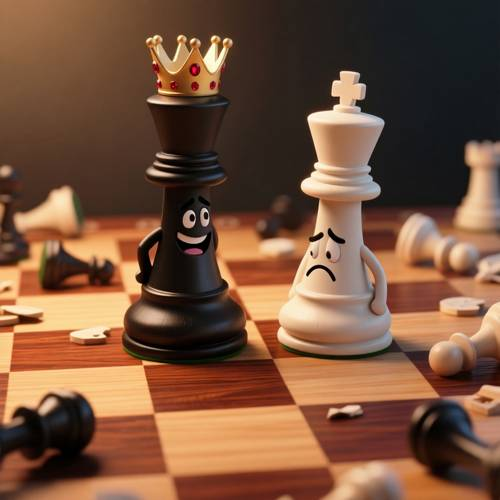
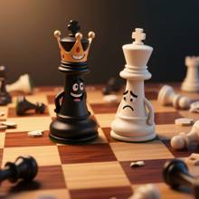

Attribute — On the chessboard, the black king chess piece was smiling proudly, and
On the chessboard, the black king chess piece was smiling proudly, and beside it was a sad white king chess piece. The game was decided.

Direct — one call, no iteration

Continuum — Qwen3.8-27B + Qwen-Image
Judge — Direct
FAILAttribute - Expression — The white king chess piece has a black, downward-curved line on its cross, creating a sad expression. The black king chess piece, however, has no facial features and is not depicted as smiling.
PASSRelationship - Similarity — The image displays two chess pieces that are both identifiable as king pieces due to their characteristic shape and the cross finial on top. They are similar in design, differing in color.
PASSWorld Knowledge — The image accurately depicts a wooden chessboard with alternating light and dark squares, and two pieces that are visually consistent with the appearance of king chess pieces.
Judge — Continuum
PASSAttribute - Expression — The black chess piece has a large, open-mouthed smile with its hands on its hips. The white chess piece to its right has a downturned mouth and drooping eyebrows, conveying sadness.
PASSRelationship - Similarity — The two central pieces are both identifiable as king chess pieces. The white piece is topped with a traditional cross, while the black piece is topped with a golden crown, a common symbol for a king.
PASSWorld Knowledge — The image displays a wooden chessboard with alternating light and dark squares. The two central figures are a black king chess piece and a white king chess piece. Other fallen chess pieces are visible in the background and foreground.
What the agent did
Thinking
The user wants an image of a chessboard on which a black king chess piece is standing with a proud smile, while next to it is a sad white king chess piece. The game is decided (a checkmate situation). Let's generate this image with qwen-image as instructed. I need to write a detailed prompt: on a chessboard, a black king chess piece with a proud smiling face, and next to it a sad white king chess piece with a dejected expression. Perhaps I should depict a checkmate moment. Let's make it look anthropomorphized—the king pieces have faces (cartoonish style). "Proud smile" and "sad expression." Prompt: "On a chessboard, a black king chess piece with a face, a proud wide smile, standing tall, and next to it a white king chess piece with a face, a sad teary-eyed dejected expression, a slumped posture. Other chess pieces on the board, checkmate scene, warm dramatic lighting, detailed 3D render." Let's generate with qwen-image, 1024x1024 (default). Actually, the size is controlled by the harness—I shouldn't set the seed. Should I set the width/height? "Size and seed are controlled by the harness." So use the default 1024x1024. After that, inspect, and edit if necessary. The key point: both kings have faces—the black king has a proud smile, the white king looks sad. Text is not needed. Let's generate.
Step 1 — `generate_image`
{
"model": "qwen-image",
"prompt": "A chessboard seen from a slightly low angle. Two king chess pieces stand face to face in the center, anthropomorphic with expressive cartoon faces carved on them. The black king chess piece has a proudly wide smiling face, chin held up, standing tall and victorious. Right beside it, the white king chess piece has a sad, dejected face \u2014 drooping eyebrows, a frown, head bowed down, slumped posture, as if defeated. The rest of the chessboard shows scattered fallen pieces, the moment of checkmate just played. Warm dramatic side lighting, rich wood grain board, cinematic 3D render, highly detailed."
}
Result img_0

Thinking
Let me inspect the image. There's a problem: there are two faces on the black king — one is the crown (a golden crown with a smiling face), and the other is the body (a smiling face). The white king has a sad face on its body. The prompt was asking for a smiling black king and a sad white king, and that's mostly achieved. But the double faces on the black piece (crown with teeth-baring smile + body with smile) is a bit weird. Actually, the black king has a grinning mouth on the crown, and a smiling face on the body too. That's a bit redundant/strange, but it still reads as "a proudly smiling black king." The white king is clearly sad with drooping eyebrows and a frown. There are pieces scattered all over, and the game has been decided. Let me zoom in to check the quality. I'll inspect the faces.
Looking at the cropped image: the black king has two faces — a grinning face on the crown, and another smiling face on the torso. This is a bit unnatural. The white king has a sad face. The black king's torso face is smiling, which matches "smiling proudly." The extra grin on the crown is a flaw, but it does add a playful sense of pride. Options: 1. Keep it as is — the black king is clearly smiling/proud (both faces are smiling), the white king is clearly sad. Fallen pieces = the game is over. This matches the prompt. 2. Edit to remove the crown face — but that's a risky edit, and there's a chance it'll break the crown. The prompt: "the black king piece is smiling proudly, and next to it the white king piece is sad. The game is over." Both conditions are satisfied. The double faces are a bit odd, but both faces are smiles, and the pride reads well (the black king's hand-on-hip posture). The crown face could probably be improved by removing it — edit: "remove the grinning mouth on the gold crown, make the crown plain gold with red jewels." Try this edit, and if it fails or breaks something, fall back to img_0. Let's give it a try. Use qwen-image for the edit (per policy). Delta only: remove the smiling mouth on the black king's gold crown and make it a plain gold crown with red jewels.
Model
The image mostly matches — the black king is proudly smiling with hand on hip, the white king is dejected, and the fallen pieces convey that the game is over. One flaw: the black king's golden crown has an extra grinning mouth on it. Let's fix that.
Step 3 — `edit_image`
{
"image": "img_0",
"model": "qwen-image",
"prompt": "Remove the grinning mouth with teeth from the gold crown on top of the black king. The crown should be a plain golden crown with red jewel dots and no face on it. Keep everything else exactly the same, including the smiling face on the black king's body and the sad white king."
}
Result img_2
Thinking
Now the crown is plain gold with red jewels—no face. The black king's torso face is still smiling, and the white king is still sad. Let me check the faces at full resolution to confirm that both faces are preserved and look correct.
Model
The crown is fixed. Let me verify both faces survived the edit cleanly.
The crown is now a clean gold crown with red jewels, no face. The black king has a face that's proudly smiling with hands on hips. The white king has a face that's clearly sad, with drooping eyebrows and a frown. Both are intact. Everything the prompt asks for is in place: - A chessboard ✓ - A black king smiling proudly ✓ - A sad white king next to it ✓ - The game has ended (fallen pieces scattered about) ✓ Mark img_2 as the best and stop.
Step 5 — `mark_best`
{
"image": "img_2",
"reason": "Black king proudly smiling with hand on hip and clean gold crown, sad white king with bowed head beside it, fallen pieces scattered to show the game is decided. All prompt elements present and clean."
}
Thinking
The image is complete. The final result is img_2, and I've marked it as the best. It's time to stop.
Model
Done. The final image shows the moment the game was decided: on a wood chessboard with fallen pieces scattered around, the black king stands tall with a proud, wide smile and a hand on its hip, wearing a clean golden crown with red jewels, while the white king slumps beside it with a bowed head, drooping brows, and a frown. I fixed the stray grinning face on the crown from the first pass, and the marked result (img_2) is ready.